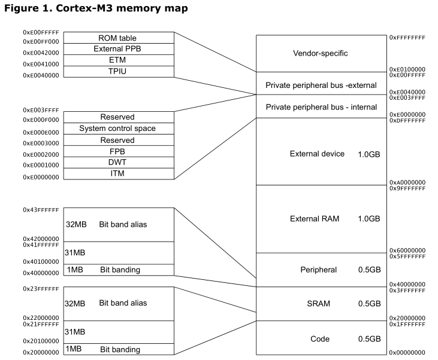
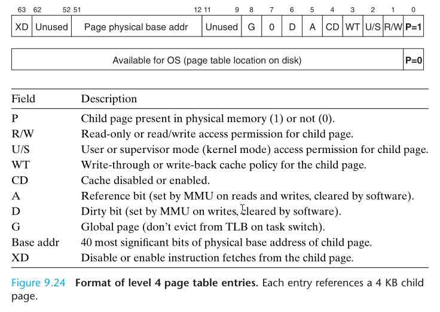

为什么会出现 segmentation fault 之与虚拟内存
Contents
在最初的开始学编程并接触 C 的时候，相信大家或多或少的遇到过“锟斤拷”和“烫烫烫”的错误，严重时还会出现段错误(segmentation fault)导致程序崩溃，那么为什么会段错误？或者说我访问越界了程序/操作系统怎么知道？要想弄明白这一点就需要学习下虚拟内存映射是怎么回事。
虚拟映射
虚拟内存就是一层内存的隔离，单个进程接触到的内存地址范围都是一样的，但实际访问的时候会被 MMU 翻译成物理地址，这样方便程序在连接的时候地址就是唯一的，同时隔离的实际的内存的大小，即不管是 2GB 还是 3GB 的物理内存，最后对于程序来说都是 4G 的虚拟内存空间（对于 32 位系统来说），这样可以在内存将满的时候可以通过虚拟内存将部分内存映射到硬盘之上，实现一个很大的程序在有限的物理内存空间运行。
以一个 32 位机器进程的视角来说，它看到的内存都是下面是映射：
| 地址 | 作用 | 说明 |
|---|---|---|
| >=0x0000 0000 | 内核虚拟存储 | 内核 1G，用户 3G |
| < 0xC000 0000 | Stack（用户栈） | %esp 指向栈顶 |
| ↓ ↑ |
空闲内存 | |
| >=0x4000 0000 | 文件映射区域、共享库 | mmap 系统调用将文件映射到内存 |
| ↑ | 空闲内存 | |
| Heap（运行时堆） | 通过 brk/sbrk 系统调用扩大堆，向上增长 | |
| .bss（未初始化的数据） | 从可执行文件中加载 | |
| .data（已初始化的数据） | 从可执行文件中加载 | |
| >=0x0804 8000 | .init、.text.、rodata（只读段） | 从可执行文件中加载 |
| < 0x0804 8000 | 保留区域 |
对于上表中的各项的解释：
内核空间 还可以进一步细分，从高地址到低地址：
- ZONE_DMA, 内存开始的16MB
- ZONE_NORMAL, 16MB ~ 896MB
- ZONE_HIGHMEM, 896MB ~ 结束（1G）
- 如果安装功能分：
- 进程数据结构（每个进程不一样，如 page table, task and mm structs, kernel stack）
- 内核代码和数据（每个进程一样）
用户栈
- 在用户栈底（不同于 main 栈底）还有一段存储着程序名称、环境变量指针和命令行参数指针的栈区域，参考 ELF auxiliary vector
- 既然环境变量在堆栈部分，那么在 shell 执行 export 的时候是怎么成功的加入新的环境变量并可以传播给子进程的？在
unistd.h里有着extern char **environ;声明，该字符串数组指针（以 NULL 分隔）指向堆区域（实际的环境变量存储区域），增删环境变量会改变该指针和更新移动到新的堆上。既然 exec 时候会清掉堆，那么在执行execve(2)系统调用将维护的环境变量更新，即将**environ传递给其 envp 参数，然后由系统来复制该堆数据，参考 setenv 源码；相对的 set 命令设置 shell 的属性（shell 变量），并不会传递给子进程。 - APCS, ARM 过程调用标准 (ARM Procedure Call Standard)，不一定适合 X86 但是可以借鉴函数调用时候的压栈规则
文件映射区域
- 可以通过 mmap 系统调用将试图访问的文件映射到该区域
- 一些共享连接库也会被映射到该部分
运行时堆
- 通过 brk/sbrk 系统调用可以控制堆的增长
可执行文件段
- .bss 段为无初始化数据的全局或静态变量
- .data 段为有初始化数据的全局或静态变量
- .init 用于初始化的段，可以 手动修改
- .text 程序段，通常为 main 开始的代码
- .rodata 常量段
相比之下单片机的内存的映射就很直接，如 32 位的 ARM Cortex-M3 的单片机的内存直接映射如下：

ARM 的 A、R、M 系列其中 A 系列（手机CPU）之所以能够跑得起 Linux（Android）内核，其中一个原因就是其具有 MMU 模块，而 M 系列也就只能跑跑 uCosII、FreeRTOS 实时操作系统了，只有任务而没有进程、线程的概念了。
虚拟映射的好处
- 直接把文件数据映射到加载到内存中
- 每个进程虚拟的内存地址，避免其他进程的错误读写
- 共享对象可以被映射到多个进程的共享虚拟内存段中，实现动态链接
- 私有对象，一开始也是被多映射到多进程的虚拟内存当中的，当一个进程发生私有写操作，会触发保护故障，之后会复制将要被写页的拷贝和然后重新映射、恢复。这就是写时拷贝 (copy on write)，对于 fork/exec* 系统调用来说，由于有写时拷贝技术，进程的创建也是也是非常快的。
CPU 访问的虚拟地址需要通过 MMU 硬件转换为物理地址，而内存中一般是以页为单位的（局部性原理），如 32 位系统取高 20 位为页地址，这样 MMU 只需要实现一个 2^20*4Bytes = 4MB 大小的查找表即可，这样来一页的大小为 2^12=4KB
现在的页表通常是多级的，一般是 4 级，不同级别的 PTE(Page table entry) 其 4Byte 结构如图如下：

虚拟地址分成两级，指令中的那个值被称为“逻辑地址”，送给MMU中的“分段单元”，转换成线性地址，线性地址再通过“分页单元”，转换成物理地址。
因为页的存在， malloc(1) 可能会直接分配一页大小，那么有可能其指针越界了很长的偏移量（便宜出该页）才产生 segmentation fault。
如果频繁的 CPU 寻址，PTE 会缓存在 CPU 的 L1 缓存中，以提升查表速度，或者缓存到 translation lookaside buffer (TLB) 中。
那么这些页表是如何存储管理到一个具体的进程的呢？
内核态和用户态
首先对于上面虚拟内存映射当中的内核空间的进一步的解释：
当一个任务（进程）执行系统调用而陷入内核代码中执行时，我们就称进程处于内核运行态（或简称为内核态），此时处理器处于特权级最高的（0 级）内核代码中执行。当进程处于内核态时，执行的内核代码会使当前进程的内核栈。每个进程都有自己的内核栈。
进程在执行用户自己的代码时，则称其处于用户运行态（用户态）。即此时处理器在特权级最低的（3 级）用户代码中运行。
当正在执行用户程序而突然被中断程序中断时，此时用户程序也可以象征性地称为处于进程的内核态。因为中断处理程序将使用当前进程的内核栈。这与处于内核态的进程的状态有些类似。
内核空间中存放的是内核代码和数据，而进程的用户空间中存放的是用户程序的代码和数据。不管是内核空间还是用户空间。在 linux 操作系统中，每个进程都通过一个 task_struct 的结构体描叙，每个进程的地址空间都通过一个 mm_struct 描述如下。
整体的来看，一个进程在虚拟映射的内核空间的进程数据结构部分存储着它自己的一份 task_struct，其中 mm_struct 的 mmap 部分，指向了 vm_area_struct ，该部分存储着连续的 PTE（后称页），然后页里面存储着物理内存的具体地址即一帧。
对于 Windows 来说其 EPROCESS 存储了类似 Linux 里的 task_struct 和 mm_struct 的混合体，使用的 AVL 树存储不同于 Linux 的红黑树。
那么内存访问的具体过程是怎么样的？
换页机制
当 CPU 试图访问虚拟地址的一个页时候（简化为单级页表），发生以下操作：
|
|
上述是简化过程，对是否 dirty, copy on write 等等问题暂时没有提及。还有一点就是如果访问的虚拟地址是在栈的话，如果越界的话是会尝试下扩栈的，具体参考 《Understanding Linux Kernel》 的 7.4 Page Fault Exception Handler 章节。
看到这里就知道为什么当访问一个非法的地址时候，会被操作系统拦住然后给当头一棒：*segmentation fault*。
检验一下
Linux 上可以通过 cat /proc/pid_of_process/maps 查看进程的虚拟内存映射映射的情况，如可以参考到该进程依赖于哪些动态链接库，或者使用 pmap pid_of_process 命令，如下在一个 X64 机器上：
|
|
上面的输出是从地址由低到高排序的，以第二行的数据介绍，00400000-0040c000 为该段的虚拟地址的范围，都以 000 结尾是因为 4k 对齐;第二段 rwxp 为模式，及是否可以写、读、执行、s:共享/p:私有、R:交换，可以根据这个判断出三个 /bin/cat 从上到下为 .text(r-xp) .data(r–p) .bss(rw-p)；之后的 00000000 08:01 50855960 分别对应 offset、Device(minor:major)、Inode，之后 /bin/cat 就是具体的 mapping。对于 pmap 命令可以加上 -x 参数看到释义，更多参考pmap。
前面的关于 /bin/cat 的三行就是 .text .data .bss 段了；之后为 heap 段。然后就是 Memory Mapping Segment，一些文件或者动态链接库在内存中的映射，如这里的ld-2.23.so 和 libc-2.23.so；之后就是 stack 了，栈的最大范围可以使用 prlimit 命令查看，默认栈大小是 8MB；
最后的 vvar，vdso 和 vsyscall：
- vsyscall，内核将一些本身应该是系统调用（如读取时间 gettimeofday）的直接映射到用户空间，这样对于一些使用比较频繁的系统调用，可以直接在用户空间调用以节省开销。但是vsyscall区域太小了，而且映射区域固定，有安全问题。
- 后来又造出了 vdso，之所以保留是为了兼容用户空间程序。vdso相当于加载一个linux-vd.so库文件一样（名字也由此而来），也就是把一些函数实现映射到这个区域。
- vvar也就是存放数据的地方了，那么用户可以通过调用vdso里的函数，使用vvar里的数据，来获得自己想要的信息。而且地址是随机的，更安全。
对于 64 位系统来说，虚拟地址只使用了48位，因此打印的16进制的地址都是只有12位。在 x86_64 Linux下有效的地址区间是从 0x00000000 00000000 ~ 0x00007FFF FFFFFFFF 的用户空间和 0xFFFF8000 00000000 ~ 0xFFFFFFFF FFFFFFFF 系统空间两个地址区间。而每个地址区间都有128TB的地址空间可以使用，所以总共是256TB的可用空间。同时 amd64 的页除了 4k 之外还可以指定为2M或者1G。
虽然内核空间占据了每个虚拟空间中的最高1GB字节，但映射到物理内存却总是从最低地址开始。内核的代码和数据就叫内核映像（kernel image，可以通过 ls /boot/ 看到）。当系统启动时，Linux内核映像被加载到物理地址0x00100000开始的地方，即1MB开始的区间。然而，整个内核映像在虚拟内核空间的映射只需要简单地在地址上加一个偏移量 PAGE_OFFSET(0xC0000000)，这样，内核映像在内核空间的起始地址就为0xC0100000。
为什么要内核从物理地址 0x00100000 开始映射？这是因为最初的 IBM-PC 的物理地址 0x00000~0xA0000一起640K的大小提供给程序使用，然后其他的不到 0x00100000 的地址提供如BIOS、图形卡，参考
可以使用 cat /proc/iomem 命令探究一波上面的说法，看看物理地址上都有些啥
|
|
除了内存有映射，I/O 也是映射的可以通过 sudo cat /proc/ 看到。和RAM物理地址空间相比，I/O地址空间通常都比较小，如x86 CPU的I/O空间就只有64KB（0－0xffff），ioport和iomem地址空间分别编制，均是从地址0开始，如果硬件支持MMIO（PCI规范的一部分），port地址也可以映射到memory空间去，这里就不深究了。
关于 Linux 如何加载启动的坑就以后再说吧。
多线程
一个进程空间里同时运行多个线程的程序。每个线程有自己的线程上下文，其中包括
- 唯一的线程 ID, TID
- 栈
- 栈指针
- 程序计数器
- 通用目的寄存器
- 条件码
所有运行在一个进程内的线程共享该进程的整个虚拟地址空间，包括：
- 代码
- 数据
- 堆
- 共享库
- 打开的文件
那么一个含有多个线程的进程的在内存是什么样的呢？看看下图或许你就明白了：
另外的使用 ps -t <pid> 可打印某进程的所有线程。